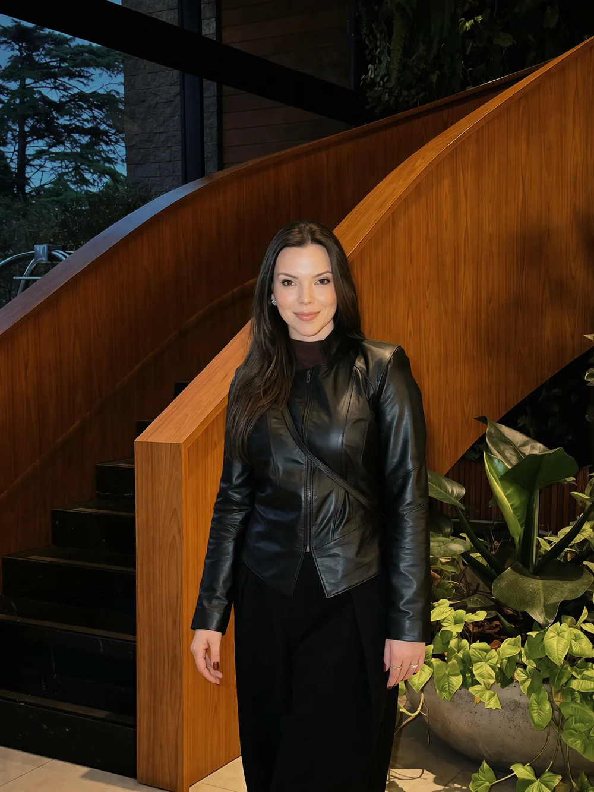
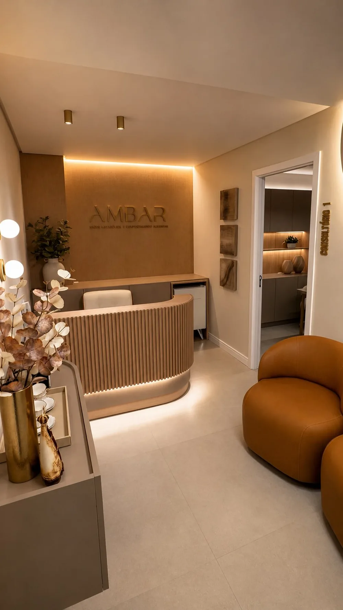

Estética · Saúde · Autoestima
Emagreça e permaneça com os resultados.
Emagrecimento e saúde metabólica para mulheres que já tentaram dietas prontas, perderam peso e recuperaram. Um plano que funciona na vida real, mesmo depois da alta.
5,0 Todas as avaliações no Google são 5 estrelas- Consulta de 1h30
- Suporte entre consultas
- CRN-2 22481
- “Sem terrorismo alimentar”
- “Cria uma rotina que cabe na nossa vida”
- “O básico muito bem feito que dá resultado”
- “Um espaço sem julgamentos”
Grupo VIP gratuito no WhatsApp
Inside by Nutricionista Geo
Conteúdos exclusivos sobre alimentação e vida saudável, bastidores do consultório, avisos de vagas e convites antes de todo mundo.
Se você chegou até aqui
Você já perdeu peso e recuperou tudo de novo?
- 01Já tentou “dietas prontas” que não tinham nada a ver com a sua rotina.
- 02Perdeu peso, recuperou, e começou tudo do zero mais uma vez.
- 03Seguiu regras impossíveis e listas de alimentos proibidos.
- 04Teve planos que só funcionaram por uma semana.
- 05Quer um resultado que se sustente ao longo dos anos, não apenas no próximo mês.
Se você se reconheceu, o problema nunca foi você. Foi um plano que não foi feito para a sua vida.
Sobre a minha metodologia
Um plano de tratamento que funciona na vida real. Na sua.
Meu método de emagrecimento foi desenvolvido para mulheres que já tentaram “dietas prontas”, perderam peso e recuperaram, mas que agora querem um processo que funcione na vida real.
Trabalho com uma abordagem estratégica e individualizada, que considera rotina, histórico, saúde hormonal, sinais físicos, exames laboratoriais e o comportamento alimentar. Nada de regras impossíveis, listas proibidas ou planos que só funcionam por uma semana.
O foco é criar autonomia, refeições que façam sentido para você, constância sem culpa e resultados que se sustentam ao longo dos anos, não apenas no próximo mês.
É emagrecimento duradouro, na prática. Feito para a mulher real, com uma vida real.
- Sem extremosVocê aprende a comer do seu jeito.
- Sem culpaConstância no lugar da perfeição.
- Com autonomiaVocê entende o porquê de cada escolha.
O acompanhamento
Tudo o que está incluso no seu tratamento
- 01
Anamnese humanizada
Entendimento profundo da sua rotina e dos seus sintomas.
- 02
Avaliação física
Medidas e composição corporal para traçar o seu ponto de partida.
- 03
Exames bioquímicos
Solicitação e análise dos exames essenciais para o seu caso.
- 04
Suplementação individualizada
Indicações precisas, somente quando necessário.
- 05
Plano alimentar
Feito para a sua vida real, sem dietas prontas.
- 06
Suporte contínuo
Acompanhamento próximo para dúvidas e orientações entre as consultas.
- 07
Simulação das refeições por IA
Visualização das suas refeições para facilitar a escolha no dia a dia.
- 08
Organização alimentar
Passo a passo para encaixar o plano na sua rotina.
Experiência · Exclusividade
Quero começar meu acompanhamentoSobre a minha consulta
Antes de qualquer orientação, entender você a fundo.
Minha consulta é totalmente personalizada. Aqui, não existe “dieta padrão”: eu analiso seu histórico, rotina, sintomas, exames, preferências alimentares, desafios reais do dia a dia e o que já funcionou (ou não) em processos anteriores.
Você sai com estratégias claras, metas possíveis e orientações. Também organizo seu acompanhamento de forma contínua, com suporte, para que você evolua com segurança, leveza e constância. Meu objetivo é que você entenda o que está fazendo, por que está fazendo e como isso transforma o seu resultado.
O que minhas pacientes estão falando
Avaliações reais no Google
Todas as avaliações com 5 estrelas

About me · Bem-vinda
Quem é Geovana Vidor
Sou nutricionista especializada em saúde da mulher e estética, com foco em emagrecimento duradouro e qualidade de vida. Acredito em uma nutrição prática, possível e personalizada: sem extremos, sem culpa e sem soluções de curto prazo.
No consultório, meu compromisso é ajudar cada mulher a recuperar autonomia sobre o próprio corpo, criando resultados reais que se mantêm ao longo dos anos.
CRN-2 22481

O consultório
Um lugar para ser ouvida de verdade.
“Fazia anos que não me sentia tão confortável em um consultório, sem julgamentos.”
Rafaela, paciente · ★★★★★
Antes de agendar
Dúvidas frequentes
Quanto tempo dura a primeira consulta?
Em média 1h30, totalmente dedicada a você: histórico, rotina, sintomas, exames, preferências e o que já funcionou (ou não) em processos anteriores.
Vou receber uma dieta pronta?
Não. O plano alimentar é construído a partir da sua rotina e da sua realidade, sem listas proibidas e sem regras impossíveis.
Preciso levar exames?
Se tiver exames recentes, leve. Na consulta são solicitados e analisados os exames essenciais para o seu caso.
Vou precisar tomar suplementos?
Somente quando necessário. A suplementação é individualizada e indicada de forma precisa.
Tenho apoio entre uma consulta e outra?
Sim. O acompanhamento inclui suporte contínuo para dúvidas e orientações entre as consultas.
Como faço para agendar?
Pelo WhatsApp. É só tocar no botão e mandar uma mensagem; a equipe responde com os horários disponíveis.
Está pronta para dar o seu próximo passo?
O agendamento é feito direto pelo WhatsApp.
Agendar minha consulta5,0 no Google